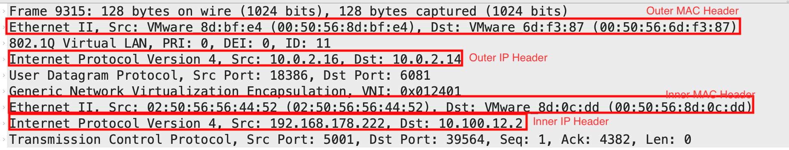
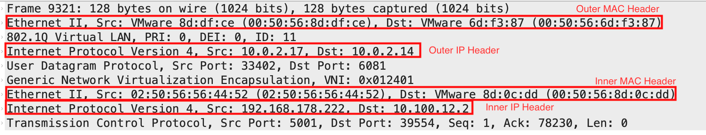

Improving NSX Datacenter TEP performance and availability - Multi-TEP and TEP Group High Availability
homelabnested labvmwarenetworknsxloadsharingHigh Availability
3887 Words Words // ReadTime 17 Minutes, 40 Seconds
2025-01-02 12:00 +0100
Introduction
Some of you are using NSX for many years already and are aware of the different changes and improvements implemented in the last years. I personally started with NSX in version 2.3 and one of the first important improvements I recognized is “MultiTEP” for edge nodes from type VM. It was released with NSX 2.5 and officially added to the reference design guide.
By the way: The reference design guide is still a great resource to learn the design pricipals for NSX implementaions. This is especially interesting for those who might be new to NSX.
Over the years some additional enhancements were implemeted like the enhanced datapath, ECMP optimisations and many more. But one major problem in case of specific failover scenarios was still in place! This problem comes into place, if the physical uplinks of the ESXi hosts and the baremetal edges or the virtual network interfaces of the edge VMs are up, but the layer2 or layer3 connectivity of the TEP interfaces is broken. In this situation the TEP interfaces do not failover, since the assigned BFD sessions are validating the link states only. That means a failover of a TEP interface was just triggered by a failed connectivity between the physical switch and the connected port of the host transport nodes. For edges this will generally not happen and therefore a failover will not be triggered, if the connectivity is broken and the virtual cable still connected.
This behavior is finally changed in NSX 4.1 by implementing Multi-TEP High Availability and supplemented by TEP group HA, which is available for edge nodes since NSX 4.2.1. In addition the TEP group feature improves the load sharing for the North/ South traffic of overlay segments or all overlay traffic sent over edge nodes by using a service router. The load sharing feature of TEP groups is also available for edges in NSX 4.2.0, just the HA addition was implemented a bit later in 4.2.1. You might wonder why I am talking about load sharing as a new feature, but this was previously implemented on per segment basis and not per flow.
Within this blog post I will talk about the HA and load sharing behavior and compare the behavior with and without those features. The results will be validated by the following test cases.
- Inspecting packet capture created on the two fp-eth interfaces used for the edge node after implementing the new features (Check section “What is Multi-TEP and TEP Group HA?”)
- Breaking Layer2 communication of an ESXi host by manipulating the assigned VLAN IDs before implementing the new features (Check section “Test case execution before applying the changes”)
- Breaking Layer2 communication of an egde node by manipulating the assigned VLAN IDs before implementing the new features (Check section “Test case execution before applying the changes”)
- Breaking Layer2 communication of an ESXi host by manipulating the assigned VLAN IDs after implementing the new features (Check section “Test case execution after applying the changes”)
- Breaking Layer2 communication of an egde node by manipulating the assigned VLAN IDs after implementing the new features (Check section “Test case execution after applying the changes”)
Before and while implementing those test cases, I will ping a test VM to show the behavior of the communication.
Lab environment
For the tests I worked with the following lab environment.
- Three nested ESXi hosts of version 8.0.3, 24022510
- vCenter server of version 8.0.3, 24022515
- NSX Datacenter version 4.2.1.1
- Alpine test VM
What is Multi-TEP and TEP Group HA?
Multi-TEP HA is a feature implemented in NSX Datacenter 4.1 and optimizes the behavior of TEP failover. Starting with NSX Datacenter 4.1 it was applicable for host transport nodes only, not for edge transport nodes. Without Multi-TEP HA a layer2 or layer3 outage did not cause an failover of a TEP on any type of NSX transport nodes, if the link state is kept online. The missing failover of the affected TEP caused an outage for all worklaods using this TEP interface. Based on the loadsharing alogorithm “Load Balance source” this will cause approx. 50% of the whole workload located on the affected transport nodes.
Multi-TEP HA solves this challenge by implementing BFD sessions actively sending keepalive messages between the different transport nodes. Those keepalive messages will trigger a failover in case the corresponding BFD sessions switching the state from “UP” to “DOWN”.
As an example the following drawing shows the connection between two different host transport nodes using two TEP interfaces each. This drawing also shows the base scenario used to execute the upcoming failover scenarios.
{kind=link}
Based on the BFD sessions validating only the link state instead of sending real keepalive messages, the following drwawing shows the two possible failover behaviors without Multi-TEP HA. The first situation where the link changes his state from “UP” to “DOWN” and the second situation where the layer2 communication is broken, but the link is still in state “UP”. As you can see in the first situation the VM will be still available, but for the second situation the VM becomes unavailable.
{kind=link}
After the implementation of Multi-TEP HA the second situation is covered as well as the first situation. The result is shown in the drawing below.
{kind=link}
The next scenario shows a failover for edge transport nodes which are using multiple TEP interfaces. For edge transport nodes this requires the configuration of TEP Groups which are available since NSX 4.2 and TEP Group HA introduced with NSX 4.2.1. A TEP Group defines a group of multiple TEP interfaces, which will be used instead of the dedicated fastpath interfaces like “fp-eth0” available on the edge transport nodes from type VM. Without the enhancement of Multi-TEP HA it improves the load sharing behavior for communication sent of edge transport nodes. If TEP Groups are not implemented each overlay segment is explicitly bound with a single fastpath interface. This can be validated with the command “get logical-switch” or “get segments”, if you are connected to the nsxcli of an edge transport node. The following output shows an example output of my lab environment.
UUID VNI ENCAP DEVICE NAME GLOBAL_VNI(FED)
3465eadb-9f77-4f33-978c-c70eb5746195 70657 GENEVE fp-eth1 avi-domain-c20:d6f4ac77-09e6-4a22-8d95-3b17ba939c3b-0
46299707-dc54-46e8-8e64-aee000f47789 65536 GENEVE fp-eth0 multicast-transit-bp-bf5d6838-365d-4896-a86d-ff038f3aefe0
40ae9a74-03f2-41c7-b8c7-a8bcb70461ca 68609 GENEVE fp-eth1 seg-domain-c20:d6f4ac77-09e6-4a22-8d95-3b17ba939c3b-test-0
ee681ecb-224c-48a6-b5d0-11b5a713d3d4 72706 GENEVE fp-eth0 transit-rl-1af22a37-499a-40af-9f38-4e399ca9b3df
c9390ed0-c587-4214-b26e-26705d4cd2f0 74753 GENEVE fp-eth1 seg-preseveclientip-backend
7439a8de-2137-4ce6-a492-d7e75cec8f21 74752 GENEVE fp-eth1 inter-sr-routing-bp-t0-test
0fb2a9a8-2042-483f-8f50-3c9a7e7acfae 65538 GENEVE fp-eth1 transit-bp-domain-c20:d6f4ac77-09e6-4a22-8d95-3b17ba939c3b
e1c55b2c-6b32-4166-b6b7-2fdc125dabdc 65539 GENEVE fp-eth1 vnet-domain-c20:d6f4ac77-09e6-4a22-8d95-3b17ba939c3b-test-tkc-test01-mz-820c6-0
d47b2c28-d25e-4224-a4b8-6d300ae3baa5 68611 GENEVE fp-eth1 transit-bp-t1_c21033c0-3741-43c7-a4bb-11f6b3ef0a7f_rtr
5c8d0a5e-e1dc-4474-b27a-9f0e8c03ca25 65537 GENEVE fp-eth1 transit-rl-194b6bb8-a56e-4c3d-8236-9687c93c64d5
64ae82a1-769c-4f78-83e4-a42978bcd07c 71682 GENEVE fp-eth1 avi-domain-c20:d6f4ac77-09e6-4a22-8d95-3b17ba939c3b-test-0
4e3820e9-8e3d-40aa-b21b-f7b9c02079b8 72704 GENEVE fp-eth1 avi-mgmt
4fbe907a-e30d-4a86-989d-ae390fef74fc 72705 GENEVE fp-eth1 avi-data
c26f82d1-987f-4d36-b99b-a6efe3b01789 69633 GENEVE fp-eth1 transit-bp-t1-preserveclientip-test
6fe806ec-64cc-47b8-8451-84ffeb65fecd 65542 GENEVE fp-eth0 egress-staging
d509b42e-5db6-4458-9543-17a582fe1e40 65541 GENEVE fp-eth1 seg-preserveclientip-sedata
9ac22341-e348-4d76-8444-456d5d179e3a 70656 GENEVE fp-eth0 transit-rl-6f9eb35f-7778-4eca-ba9d-b7dd4af26800
91384425-136a-48c6-8245-fa370f02112c 68612 GENEVE fp-eth1 transit-rl-7ea6dc1b-bd41-4028-96ab-8c351c1fee67
6f3b4dc3-90a4-4dbd-97f5-8f7f4c00c3af 67584 GENEVE fp-eth0 transit-rl-a879bdaf-37d8-4dda-801d-76fa5bf0c670
106aedc8-08b2-48a9-8f34-5d590faf5f99 69632 GENEVE fp-eth0 vm-domain-c20:d6f4ac77-09e6-4a22-8d95-3b17ba939c3b-vif-default-network-0
f8a9f3b1-827d-4de0-8b80-081220566a07 71683 GENEVE fp-eth0 egress-prod
a1b4f3f7-ce15-4e92-876a-591abc15dddc 68610 GENEVE fp-eth0 avi-data2
40069c22-3a20-476c-bc16-113892c29eb7 73728 GENEVE fp-eth0 transit-rl-8ed6fb22-d842-42b6-b034-c7dd2e053f02
dcbd8196-5550-466e-9bae-2c4f08476386 71681 GENEVE fp-eth1 seg-tanzu-infra
b7f36c3d-8415-4904-9e6d-1820dfeb106f 71680 GENEVE fp-eth0 transit-bp-t0-test
In this example the whole communication of an overlay segment will be sent over the shown fastpath interface within the privous output. This is the case for each packet sent through the edge transport nodes. That means you will not have any load sharing, if you are using a single segment. Loadsharing is just applicable, if you are using mutiple segments and those segments are mapped to different fastpath interfaces.
After the feature of TEP groups is enabled, the output of the segments will be as shown below. But this time it is required to use the command “get logical-switch”, since “get segments” does not show any device for the overlay segments, if TEP groups are enabled.
UUID VNI ENCAP TEP_GROUP NAME GLOBAL_VNI(FED)
3465eadb-9f77-4f33-978c-c70eb5746195 70657 GENEVE 285696 avi-domain-c20:d6f4ac77-09e6-4a22-8d95-3b17ba939c3b-0
46299707-dc54-46e8-8e64-aee000f47789 65536 GENEVE 285696 multicast-transit-bp-bf5d6838-365d-4896-a86d-ff038f3aefe0
40ae9a74-03f2-41c7-b8c7-a8bcb70461ca 68609 GENEVE 285696 seg-domain-c20:d6f4ac77-09e6-4a22-8d95-3b17ba939c3b-test-0
ee681ecb-224c-48a6-b5d0-11b5a713d3d4 72706 GENEVE 285696 transit-rl-1af22a37-499a-40af-9f38-4e399ca9b3df
c9390ed0-c587-4214-b26e-26705d4cd2f0 74753 GENEVE 285696 seg-preseveclientip-backend
7439a8de-2137-4ce6-a492-d7e75cec8f21 74752 GENEVE 285696 inter-sr-routing-bp-t0-test
0fb2a9a8-2042-483f-8f50-3c9a7e7acfae 65538 GENEVE 285696 transit-bp-domain-c20:d6f4ac77-09e6-4a22-8d95-3b17ba939c3b
e1c55b2c-6b32-4166-b6b7-2fdc125dabdc 65539 GENEVE 285696 vnet-domain-c20:d6f4ac77-09e6-4a22-8d95-3b17ba939c3b-test-tkc-test01-mz-820c6-0
d47b2c28-d25e-4224-a4b8-6d300ae3baa5 68611 GENEVE 285696 transit-bp-t1_c21033c0-3741-43c7-a4bb-11f6b3ef0a7f_rtr
5c8d0a5e-e1dc-4474-b27a-9f0e8c03ca25 65537 GENEVE 285696 transit-rl-194b6bb8-a56e-4c3d-8236-9687c93c64d5
64ae82a1-769c-4f78-83e4-a42978bcd07c 71682 GENEVE 285696 avi-domain-c20:d6f4ac77-09e6-4a22-8d95-3b17ba939c3b-test-0
4e3820e9-8e3d-40aa-b21b-f7b9c02079b8 72704 GENEVE 285696 avi-mgmt
4fbe907a-e30d-4a86-989d-ae390fef74fc 72705 GENEVE 285696 avi-data
c26f82d1-987f-4d36-b99b-a6efe3b01789 69633 GENEVE 285696 transit-bp-t1-preserveclientip-test
6fe806ec-64cc-47b8-8451-84ffeb65fecd 65542 GENEVE 285696 egress-staging
d509b42e-5db6-4458-9543-17a582fe1e40 65541 GENEVE 285696 seg-preserveclientip-sedata
9ac22341-e348-4d76-8444-456d5d179e3a 70656 GENEVE 285696 transit-rl-6f9eb35f-7778-4eca-ba9d-b7dd4af26800
91384425-136a-48c6-8245-fa370f02112c 68612 GENEVE 285696 transit-rl-7ea6dc1b-bd41-4028-96ab-8c351c1fee67
6f3b4dc3-90a4-4dbd-97f5-8f7f4c00c3af 67584 GENEVE 285696 transit-rl-a879bdaf-37d8-4dda-801d-76fa5bf0c670
106aedc8-08b2-48a9-8f34-5d590faf5f99 69632 GENEVE 285696 vm-domain-c20:d6f4ac77-09e6-4a22-8d95-3b17ba939c3b-vif-default-network-0
f8a9f3b1-827d-4de0-8b80-081220566a07 71683 GENEVE 285696 egress-prod
a1b4f3f7-ce15-4e92-876a-591abc15dddc 68610 GENEVE 285696 avi-data2
40069c22-3a20-476c-bc16-113892c29eb7 73728 GENEVE 285696 transit-rl-8ed6fb22-d842-42b6-b034-c7dd2e053f02
dcbd8196-5550-466e-9bae-2c4f08476386 71681 GENEVE 285696 seg-tanzu-infra
b7f36c3d-8415-4904-9e6d-1820dfeb106f 71680 GENEVE 285696 transit-bp-t0-test
As you can see in the previous output, the different segments are now mapped with a TEP group instead of a dedicated fastpath interfaces. As soon as this is the case the communication of all overlay segments is load-shared on per flow basis. Traffic sourced by edge transport nodes is then load-shared across all source edge TEPs and the traffic destined to edge transport nodes is then load-shared across all destination edge TEPs. As prove of the flow based loadsharing I did a test on a alpine VM connected to the segment “seg-preseveclientip-backend” by using a iperf session. The alpine VM acts as iperf client and a server outside of the NSX overlay acts as the iperf server.
Starting the iperf server on the destination:
iperf3 -s -p 5001
Starting iperf on the clinet (alpine VM):
iperf3 -c <ip of iperf server> -p 5001
To track the used fastpath interfaces I started a packet capture on the edge transport nodes from the nsxcli by using the following command.
set capture session 1 interface fp-eth0 direction dual
set capture session 1 interface fp-eth1 direction dual
set capture session 1 file tepha.pcap
To be able to understand the generated packet capture the following overview shows the two fastpath interfaces of the edge transport node used to forward the North/ South communication. Further the list includes the VM used for the test communication and the required iperf server.
- fp-eth0:
- TEP IP: 10.0.2.16
- MAC: 00:50:56:8d:bf:e4
- fp-eth1:
- TEP IP: 10.0.2.17
- MAC: 00:50:56:8d:df:ce
- Alpine VM:
- Segment: seg-preseveclientip-backend
- IP: 10.100.12.2
- IPerf Server:
- IP: 192.168.178.222
The following two screenshots are the prove that the same VM connected to the same segment is load-shared over both fastpath interfaces. Please be aware, that the packet capture examples are showing the response packets only.
PCAP output where flow is using fp-eth0: 
{kind=link}
PCAP output where flow is using fp-eth1: 
{kind=link}
After upgrading to NSX 4.2.1, the feature of Multi-TEP is automatically enabled for als edge transport node TEP interfaces, if the TEP group feature is enabld. The following drawing visualizes the mapping of a overlay sgement with and without TEP groups.
{kind=link}
In the next drawing you can discover the result of a layer2 comminication issue in case you are using TEP groups with Multi-TEP HA compared to a implementation without TEP groups and no Multi-TEP HA as TEP group enhancement.
{kind=link}
How to implement Multi-TEP HA?
To implement Muti-TEP HA the following steps are required.
- Create a TEP HA host switch profile as shown below.
PUT https://<nsx-policy-manager>/policy/api/v1/infra/host-switch-profiles/vtephaprofile1
{
"enabled": "true",
"failover_timeout":"5",
"auto_recovery" : "true",
"auto_recovery_initial_wait" : "300",
"auto_recovery_max_backoff" : "86400",
"resource_type": "PolicyVtepHAHostSwitchProfile",
"display_name": "VtepHAProfile1"
}
- Assign the TEP HA profile to an transport node profile. Based on the asignment of the transport node profile, you are able to select the hosts which should get the Multi-TEP HA feature enabled. Do not forget to gather the ID of the transport node profile, otherwhise you are unable to map the TEP HA profile.
PUT https://<nsx-policy-manager>/policy/api/v1/infra/host-transport-node-profiles/<tnp-id>
{
"host_switch_spec": {
"host_switches": [
{
"host_switch_name": "vtepha_vds",
"host_switch_id": "50 22 ee c4 f6 40 79 8b-0e a4 2b da 6a 4c 36 b3",
"host_switch_type": "VDS",
"host_switch_mode": "ENS_INTERRUPT",
"host_switch_profile_ids": [
{
"key": "UplinkHostSwitchProfile",
"value": "/infra/host-switch-profiles/b32e6ce6-f1ba-4e31-a2c4-33d550505cdd"
},
{
"key": "VtepHAHostSwitchProfile",
"value": "/infra/host-switch-profiles/vtephaprofile1"
}
],
"uplinks": [
{
"vds_uplink_name": "Uplink 1",
"uplink_name": "uplink-1"
},
{
"vds_uplink_name": "Uplink 2",
"uplink_name": "uplink-2"
}
],
"is_migrate_pnics": false,
"ip_assignment_spec": {
"ip_pool_id": "/infra/ip-pools/v4",
"resource_type": "StaticIpPoolSpec"
},
"cpu_config": [],
"transport_zone_endpoints": [
{
"transport_zone_id": "/infra/sites/default/enforcement-points/default/transport-zones/de47a6b9-fa4c-4bf3-bd75-385859895949",
"transport_zone_profile_ids": []
}
],
"not_ready": false
}
],
"resource_type": "StandardHostSwitchSpec"
},
"ignore_overridden_hosts": false,
"resource_type": "PolicyHostTransportNodeProfile"
}
- Verify if the TEP HA profile is applied to the transport node profile
GET https://<nsx-manager>/policy/api/v1/infra/host-transport-nodes-profiles/<tnp_id>
Expected output:
"host_switch_profile_ids": [
{
"key": "VtepHAHostSwitchProfile",
"value": "/infra/host-switch-profiles/<vtephaprofile1>"
}
],
How to implement TEP Groups?
The impementation of TEP groups of edge transport nodes can be done by changing a single parameter from the NSX API.
GET https://<NSX manager>/policy/api/v1/infra/connectivity-global-config
Important fragment of the expected output shows the value for the required parameter “enable_tep_grouping_on_edge” set to “false”:
{
// ...
"global_replication_mode_enabled": false,
"is_inherited": false,
"site_infos": [],
"tep_group_config": {
"enable_tep_grouping_on_edge": false
},
"resource_type": "GlobalConfig",
"id": "global-config",
"display_name": "default",
"path": "/infra/global-config",
// ...
}
With the following API call the parameter should be changed to “true”, if you want to enable the TEP group feature.
PUT https://<NSX manager>/policy/api/v1/infra/connectivity-global-config
{
// ...
"global_replication_mode_enabled": false,
"is_inherited": false,
"site_infos": [],
"tep_group_config": {
"enable_tep_grouping_on_edge": true
},
"resource_type": "GlobalConfig",
"id": "global-config",
"display_name": "default",
"path": "/infra/global-config",
// ...
}
To enable Multi-TEP HA it is not required to do anything else. It is just required to have NSX updated to version 4.2.1 or later and TEP groups enabled.
Test cases
The following section describes the tests done to validate the behavior before and after the changes. The validation is done by executing cli commands in the nsxcli and the execution of ICMP messages.
- Source of ICMP: 192.168.178.222
- Destination of ICMP: 10.100.12.2 (Alpine VM connected to segment “seg-preseveclientip-backend”)
As an additional overview for the tests you can see the information for the segement where the alpine is connected in comparison to a second segment.
Output of ESXi host
get logical-switch
VNI Logical Switch UUID Name
71680 b7f36c3d-8415-4904-9e6d-1820dfeb106f transit-bp-t0-test
74753 c9390ed0-c587-4214-b26e-26705d4cd2f0 seg-preseveclientip-backend
68611 d47b2c28-d25e-4224-a4b8-6d300ae3baa5 transit-bp-t1_c21033c0-3741-43c7-a4bb-11f6b3ef0a7f_rtr
70657 3465eadb-9f77-4f33-978c-c70eb5746195 avi-domain-c20:d6f4ac77-09e6-4a22-8d95-3b17ba939c3b-0
69633 c26f82d1-987f-4d36-b99b-a6efe3b01789 transit-bp-t1-preserveclientip-test
65538 0fb2a9a8-2042-483f-8f50-3c9a7e7acfae transit-bp-domain-c20:d6f4ac77-09e6-4a22-8d95-3b17ba939c3b
65541 d509b42e-5db6-4458-9543-17a582fe1e40 seg-preserveclientip-sedata
65539 e1c55b2c-6b32-4166-b6b7-2fdc125dabdc vnet-domain-c20:d6f4ac77-09e6-4a22-8d95-3b17ba939c3b-test-tkc-test01-mz-820c6-0
73728 40069c22-3a20-476c-bc16-113892c29eb7 transit-rl-8ed6fb22-d842-42b6-b034-c7dd2e053f02
71681 dcbd8196-5550-466e-9bae-2c4f08476386 seg-tanzu-infra
65537 5c8d0a5e-e1dc-4474-b27a-9f0e8c03ca25 transit-rl-194b6bb8-a56e-4c3d-8236-9687c93c64d5
70656 9ac22341-e348-4d76-8444-456d5d179e3a transit-rl-6f9eb35f-7778-4eca-ba9d-b7dd4af26800
71682 64ae82a1-769c-4f78-83e4-a42978bcd07c avi-domain-c20:d6f4ac77-09e6-4a22-8d95-3b17ba939c3b-test-0
72705 4fbe907a-e30d-4a86-989d-ae390fef74fc avi-data
68610 a1b4f3f7-ce15-4e92-876a-591abc15dddc avi-data2
72706 ee681ecb-224c-48a6-b5d0-11b5a713d3d4 transit-rl-1af22a37-499a-40af-9f38-4e399ca9b3df
69632 106aedc8-08b2-48a9-8f34-5d590faf5f99 vm-domain-c20:d6f4ac77-09e6-4a22-8d95-3b17ba939c3b-vif-default-network-0
72704 4e3820e9-8e3d-40aa-b21b-f7b9c02079b8 avi-mgmt
65542 6fe806ec-64cc-47b8-8451-84ffeb65fecd egress-staging
67584 6f3b4dc3-90a4-4dbd-97f5-8f7f4c00c3af transit-rl-a879bdaf-37d8-4dda-801d-76fa5bf0c670
68612 91384425-136a-48c6-8245-fa370f02112c transit-rl-7ea6dc1b-bd41-4028-96ab-8c351c1fee67
68609 40ae9a74-03f2-41c7-b8c7-a8bcb70461ca seg-domain-c20:d6f4ac77-09e6-4a22-8d95-3b17ba939c3b-test-0
71683 f8a9f3b1-827d-4de0-8b80-081220566a07 egress-prod
The upcomming command shows the assigned TEP IP for the segment “seg-preseveclientip-backend”. Within the output below, the “Inner MAC” is the MAC of the VM connected to this segment, the “Outer MAC” is the MAC of the TEP interface and the “Outer IP” is the TEP IP. Important is the entry “LCP Local Entry” the entry “LCP Remote Entry” is describing the VMs running on other host transport nodes.
get logical-switch c9390ed0-c587-4214-b26e-26705d4cd2f0 mac-table
Thu Jan 02 2025 UTC 09:37:43.375
Logical Switch MAC Table
---------------------------------------------------------------------------
Host Kernel Entry
===========================================================================
Inner MAC Outer MAC Outer IP Flags
LCP Remote Entry
===========================================================================
Inner MAC Outer MAC Outer IP
LCP Local Entry
===========================================================================
Inner MAC Outer MAC Outer IP
00:50:56:8d:0c:dd 00:50:56:61:ec:3c 10.0.2.13
As comparison the following output shows the assignment of the TEP interface for segment “seg-tanzu-infra”
get logical-switch dcbd8196-5550-466e-9bae-2c4f08476386 mac-table
Thu Jan 02 2025 UTC 09:38:01.367
Logical Switch MAC Table
---------------------------------------------------------------------------
Host Kernel Entry
===========================================================================
Inner MAC Outer MAC Outer IP Flags
00:50:56:8d:fe:35 00:50:56:6e:30:1e 10.0.2.11 0xf
00:50:56:8d:6b:6c 00:50:56:6d:f3:87 10.0.2.14 0xf
LCP Remote Entry
===========================================================================
Inner MAC Outer MAC Outer IP
00:50:56:8d:fe:35 00:50:56:6e:30:1e 10.0.2.11
00:50:56:8d:6b:6c 00:50:56:6d:f3:87 10.0.2.14
LCP Local Entry
===========================================================================
Inner MAC Outer MAC Outer IP
00:50:56:8d:27:f0 00:50:56:6b:71:aa 10.0.2.12
Output of the TEP interfaces including IP of the host transport node (vmk10 and vmk11).
esxcli network ip interface ipv4 get
Name IPv4 Address IPv4 Netmask IPv4 Broadcast Address Type Gateway DHCP DNS
----- ------------ ------------- --------------- ------------ -------- --------
vmk0 10.0.1.101 255.255.255.0 10.0.1.255 STATIC 10.0.1.1 false
vmk10 10.0.2.12 255.255.255.0 10.0.2.255 STATIC 10.0.2.1 false
vmk11 10.0.2.13 255.255.255.0 10.0.2.255 STATIC 10.0.2.1 false
vmk50 169.254.1.1 255.255.0.0 169.254.255.255 STATIC 0.0.0.0 false
Output of edge node from before and after the changes is visible in the section “What is Multi-TEP and TEP Group HA?”.
Test case execution before applying the changes
Before validating the behavoiour after the changes, lets start with the behavior before all the optimisations.
Multi-TEP HA - Host Transport Nodes
After the layer2 communication is interrupted, the VM is still assigned to the affected TEP IP, as shown below.
get logical-switch c9390ed0-c587-4214-b26e-26705d4cd2f0 mac-table
Thu Jan 02 2025 UTC 10:53:31.084
Logical Switch MAC Table
---------------------------------------------------------------------------
Host Kernel Entry
===========================================================================
Inner MAC Outer MAC Outer IP Flags
LCP Remote Entry
===========================================================================
Inner MAC Outer MAC Outer IP
LCP Local Entry
===========================================================================
Inner MAC Outer MAC Outer IP
00:50:56:8d:0c:dd 00:50:56:61:ec:3c 10.0.2.13
The ICMP output proves that the VM is no longer reachable as expected.
64 bytes from 10.100.12.2: icmp_seq=33 ttl=60 time=3.97 ms
64 bytes from 10.100.12.2: icmp_seq=34 ttl=60 time=2.50 ms
64 bytes from 10.100.12.2: icmp_seq=35 ttl=60 time=5.38 ms
64 bytes from 10.100.12.2: icmp_seq=36 ttl=60 time=8.48 ms
64 bytes from 10.100.12.2: icmp_seq=37 ttl=60 time=8.03 ms
64 bytes from 10.100.12.2: icmp_seq=38 ttl=60 time=14.3 ms
64 bytes from 10.100.12.2: icmp_seq=39 ttl=60 time=2.78 ms
64 bytes from 10.100.12.2: icmp_seq=40 ttl=60 time=24.9 ms
--- 10.100.12.2 ping statistics ---
55 packets transmitted, 40 received, 27% packet loss, time 54399ms
rtt min/avg/max/mdev = 2.509/10.785/49.817/9.683 ms
But as already mentioned NSX is able to failover without the implementation of the Multi-TEP HA feature, if the link state is changing from “UP” to “DOWN”. In this case the TEP IP will be moved from the failed vmnic to the any other vmnic, wich is still working. An example is shown below.
Mapping between vmk11 and vmnics before failover. The output is discoverd by the command “esxtop” in the networking overview.
{kind=link}
Mapping between vmk11 and vmnics after failover.
{kind=link}
The ICMP protocols shows a very fast failover after only one packet is lost.
64 bytes from 10.100.12.2: icmp_seq=6 ttl=60 time=6.02 ms
64 bytes from 10.100.12.2: icmp_seq=7 ttl=60 time=23.2 ms
64 bytes from 10.100.12.2: icmp_seq=8 ttl=60 time=31.4 ms
64 bytes from 10.100.12.2: icmp_seq=9 ttl=60 time=8.55 ms
64 bytes from 10.100.12.2: icmp_seq=10 ttl=60 time=7.19 ms
64 bytes from 10.100.12.2: icmp_seq=11 ttl=60 time=19.0 ms
64 bytes from 10.100.12.2: icmp_seq=12 ttl=60 time=51.3 ms
64 bytes from 10.100.12.2: icmp_seq=13 ttl=60 time=79.2 ms
64 bytes from 10.100.12.2: icmp_seq=15 ttl=60 time=13.6 ms
64 bytes from 10.100.12.2: icmp_seq=16 ttl=60 time=17.0 ms
64 bytes from 10.100.12.2: icmp_seq=17 ttl=60 time=10.0 ms
64 bytes from 10.100.12.2: icmp_seq=18 ttl=60 time=11.0 ms
^C
--- 10.100.12.2 ping statistics ---
18 packets transmitted, 17 received, 5% packet loss, time 17043ms
rtt min/avg/max/mdev = 5.584/23.531/79.297/20.795 ms
TEP Groups - Edge Transport Nodes
After breaking the layer2 connectivity of fp-eth1 where the segment of the alpine VM is assigned to, the alpine loses the reachability. This is also shown in the following ICMP protocol.
64 bytes from 10.100.12.2: icmp_seq=31 ttl=60 time=32.4 ms
64 bytes from 10.100.12.2: icmp_seq=32 ttl=60 time=18.4 ms
64 bytes from 10.100.12.2: icmp_seq=33 ttl=60 time=11.5 ms
64 bytes from 10.100.12.2: icmp_seq=34 ttl=60 time=6.23 ms
64 bytes from 10.100.12.2: icmp_seq=35 ttl=60 time=4.79 ms
64 bytes from 10.100.12.2: icmp_seq=36 ttl=60 time=17.9 ms
64 bytes from 10.100.12.2: icmp_seq=37 ttl=60 time=3.63 ms
64 bytes from 10.100.12.2: icmp_seq=38 ttl=60 time=7.20 ms
64 bytes from 10.100.12.2: icmp_seq=39 ttl=60 time=8.14 ms
^C
--- 10.100.12.2 ping statistics ---
46 packets transmitted, 38 received, 17% packet loss, time 45225ms
rtt min/avg/max/mdev = 2.273/9.839/32.415/6.569 ms
A test for a link failure is not realistic, since it is a VM, but it would work exactly like the ESXi host and the TEP IP would move to the fp-eth interface which is still available. But you should keep in mind that VLAN backed segments on the edge nodes will not failover, if the link is down. Therfore it is higly reommended to use named teaming policies where redundancy is required, like for the T0 uplinks. In the case of T0 router tha failovermight be handled over BGP, in case at least one of the BGP uplinks is up and running.
Test case execution after the changes are applied
Now that we are familiar with the behavior before the changes, let’s check what has been improved
Multi-TEP HA - Host Transport Nodes
After breaking the layer2 communication of the ESXi host where the VM was running, the assigned TEP IP was changed from 10.0.2.13 to 10.0.2.12, as shown below.
get logical-switch c9390ed0-c587-4214-b26e-26705d4cd2f0 mac-table
Thu Jan 02 2025 UTC 10:24:49.329
Logical Switch MAC Table
---------------------------------------------------------------------------
Host Kernel Entry
===========================================================================
Inner MAC Outer MAC Outer IP Flags
LCP Remote Entry
===========================================================================
Inner MAC Outer MAC Outer IP
LCP Local Entry
===========================================================================
Inner MAC Outer MAC Outer IP
00:50:56:8d:0c:dd 00:50:56:6b:71:aa 10.0.2.12
As prove of the reachability and failover time you can check the following ICMP output. Here you can see that 10 packets were lost witin the time of the failover.
64 bytes from 10.100.12.2: icmp_seq=33 ttl=60 time=110 ms
64 bytes from 10.100.12.2: icmp_seq=34 ttl=60 time=6.79 ms
64 bytes from 10.100.12.2: icmp_seq=35 ttl=60 time=3.06 ms
64 bytes from 10.100.12.2: icmp_seq=45 ttl=60 time=8.99 ms
64 bytes from 10.100.12.2: icmp_seq=46 ttl=60 time=6.65 ms
64 bytes from 10.100.12.2: icmp_seq=47 ttl=60 time=11.8 ms
64 bytes from 10.100.12.2: icmp_seq=48 ttl=60 time=6.23 ms
64 bytes from 10.100.12.2: icmp_seq=49 ttl=60 time=9.94 ms
64 bytes from 10.100.12.2: icmp_seq=50 ttl=60 time=6.40 ms
64 bytes from 10.100.12.2: icmp_seq=51 ttl=60 time=8.25 ms
64 bytes from 10.100.12.2: icmp_seq=52 ttl=60 time=5.65 ms
64 bytes from 10.100.12.2: icmp_seq=53 ttl=60 time=5.71 ms
^C
--- 10.100.12.2 ping statistics ---
53 packets transmitted, 43 received, 18% packet loss, time 52262ms
rtt min/avg/max/mdev = 2.282/16.680/110.415/25.816 ms
Further you can check the GENEVE tunnels from the NSX Manager UI. Based on this output all GENEVE tunnels from TEP IP 10.0.2.13 are gone and you see the tunnels from 10.0.2.12 only.
{kind=link}
TEP Groups - Edge Transport Nodes
After breaking the layer2 connection of one TEP interface, the connection was shortly interrupted and recovered after few seconds. As shown within the ICMP protocol below, just three packets were lost.
64 bytes from 10.100.12.2: icmp_seq=1 ttl=60 time=6.25 ms
64 bytes from 10.100.12.2: icmp_seq=2 ttl=60 time=3.54 ms
64 bytes from 10.100.12.2: icmp_seq=3 ttl=60 time=28.0 ms
64 bytes from 10.100.12.2: icmp_seq=4 ttl=60 time=3.14 ms
64 bytes from 10.100.12.2: icmp_seq=5 ttl=60 time=4.47 ms
64 bytes from 10.100.12.2: icmp_seq=6 ttl=60 time=4.53 ms
64 bytes from 10.100.12.2: icmp_seq=7 ttl=60 time=40.0 ms
64 bytes from 10.100.12.2: icmp_seq=11 ttl=60 time=6.80 ms
64 bytes from 10.100.12.2: icmp_seq=12 ttl=60 time=13.3 ms
64 bytes from 10.100.12.2: icmp_seq=13 ttl=60 time=4.11 ms
64 bytes from 10.100.12.2: icmp_seq=14 ttl=60 time=4.38 ms
64 bytes from 10.100.12.2: icmp_seq=15 ttl=60 time=35.4 ms
^C
--- 10.100.12.2 ping statistics ---
15 packets transmitted, 12 received, 20% packet loss, time 14073ms
rtt min/avg/max/mdev = 3.145/12.842/40.042/12.995 ms
Further you can inspect the GENEVE tunnels of the edge node, where you can see some tunnels in state “DOWN” based on “1 - Control Detection Time Expired”.
{kind=link}
Summary
After testing the new features of Multi-TEP and TEP Group high availability I can say this is really a great improvemnent of the failover behavior. From my point of view this is a very important step in case of resilience and reducing the impact of many failure scenarios like software bugs in the underlay network wich might cause the physical switches to freeze. Further it also improves the load sharing, since it is flow based after TEP groups are enabled compared to have load sharing just available segment wise. This could also increase the total bandwitdh possible for a single VM, which is now load-shared per flow instead stically mapped to one fastpath interface of an edge transport node.
Since this feature is very easy to implement and will improve the failover behavior by optiomizing the BFD sessions and load sharing mechanism on the edge nodes, I would highly recommend to implement those two features. Sure the features are quite new and there might be some bugs, but I did not find any unexpected behavior so far. Anyways it would always be the best to test new features in dev before implementation in production.